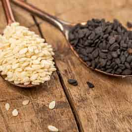
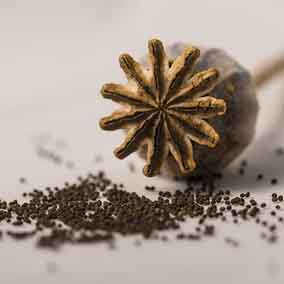
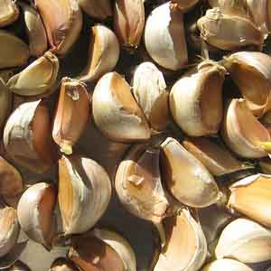
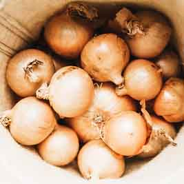
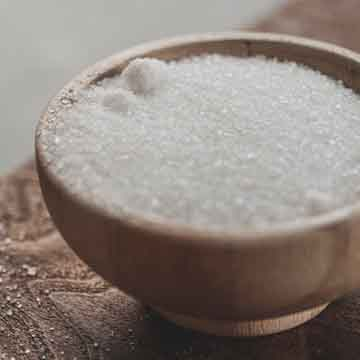

Toppings

Sesame seeds are a popular ingredient in many cuisines around the world. They are tiny oval-shaped seeds that come in a variety of colors including white, black, and brown. Not only do sesame seeds add a delicious nutty flavor and crunchy texture to dishes, but they are also packed with nutrients. They are an excellent source of protein, fiber, and healthy fats, as well as important vitamins and minerals like calcium, iron, and magnesium.

Poppy seeds are a delicious and nutritious ingredient commonly used in baked goods, salads, and dressings. They have a nutty and slightly sweet flavor and are a good source of calcium, magnesium, and iron. However, consuming large amounts of poppy seeds may lead to a false positive on a drug test due to trace amounts of opium alkaloids. It is recommended to consume them in moderation.

Garlic is a versatile ingredient that has been used for culinary and medicinal purposes for over 5000 years. It belongs to the allium family and is believed to have originated in Central Asia. Its flavor can vary depending on how it's prepared, with raw garlic having a strong and pungent taste and roasted garlic being milder and sweeter. Cooking garlic in oil or butter can mellow its flavor and make it more aromatic. Garlic can be chopped, sliced, minced, or crushed for cooking.

Onions are a common ingredient in many dishes around the world. They come in various sizes, colors, and flavors. The most common types of onions are yellow, white, and red onions. Yellow onions are the most widely used and have a pungent and slightly sweet taste. White onions are milder and sweeter, while red onions have a sharp and slightly spicy flavor. Onions are known for their health benefits as they are a good source of vitamin C, fiber, and antioxidants. They also have anti-inflammatory properties and can help improve heart health and reduce the risk of cancer.

Salt is one of the most important ingredients in cooking. It is a mineral that is commonly used for enhancing the flavor of food. Salt is also a natural preservative, which is why it has been used for centuries to preserve food. There are different types of salt available, including table salt, sea salt, and kosher salt. Table salt is the most common type of salt and is often used in cooking and baking. Sea salt is made by evaporating seawater and is often used in gourmet cooking.